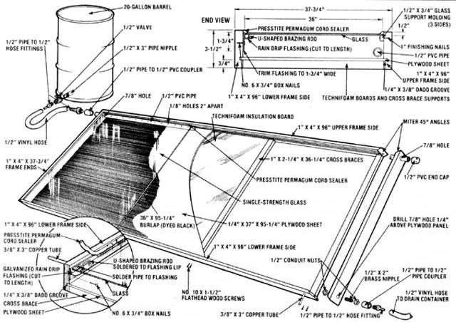
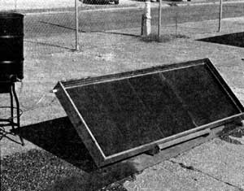
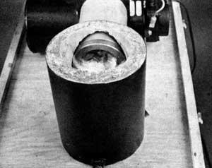
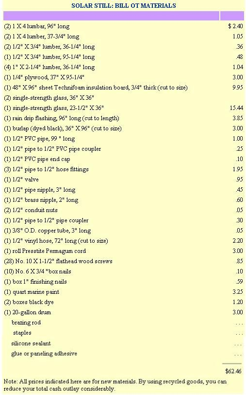

Well, the permit came through, just days before our deadline for putting out the issue you're reading now! However, MOTHER'S researchers were all set, "primed and ready" to run a few trial batches of mash through our own solar still. And as we'd expected, the easy-to-make, inexpensive device does work, and the plans that follow will enable other folks to take the first steps toward producing their supply of low-cost "backyard liquid fuel".
In addition to building the solar distillery, we've run a few experiments to determine whether "alky" can, indeed, be substituted for fuel oil in a heating system. The results of our tests-including all the "modifications" necessary to convert an oil heater to alcohol-are presented in the following pages.
However, although we do want other people to join us in researching the potentials of this renewable energy source, and although we do want folks with a little land to be able to grow fermentable crops and use them to power tractors, heat homes, and so forth . . . we would also like to ask everyone who has a hankerin' to get into this exciting research to cooperate with us on one IMPORTANT POINT: It seems that-in at least one instance-an experimental distilled spirits plant has been used to produce (and sell!) drinking liquor. The people at ATF (who now seem to be trying to cooperate with alcohol fuel researchers) were upset by this illegal activity. And, as you can imagine, it wouldn't take many instances of "bootlegging" to cause the regulations to get stiffer . . . perhaps to the point where nobody could legally explore the possibilities offered by ethanol fuel!
So, if you plan to follow in Mr. Crombie's (and MOTHER'S) footsteps, please, PLEASE, limit your experiments to "legitimate" energy applications. Don't attempt to drink (or sell) the alcohol (which is likely unsafe for consumption anyway), and don't take risks by producing ethanol without a permit.
If we all go this far in sticking to "the letter of the law", there is every chance that the present government regulations will become less restrictive, and that homemade alcohol will soon become a practical, in-use, fuel resource.
When we first heard about Lance Crombie's alcohol experiments, we naturally wanted a firsthand look at what he was doing out Webster, Minnesota way . . . and Lance-who's an amiable sort-just as naturally wanted to show us how he was progressing. So, as you know, MOTHER sent some staffers to visit Mr. Crombie . . . not only to hear what he had to say, but also to get "how to" information on the solar-powered "culture warmer" that the farmer was using to distill his alcohol.
Now we'd like to make it right clear at the beginning that the still we've detailed here is based upon Lance Crombie's design, and is purposely uncomplicated to reduce its cost. As such, it's just a mite elementary, which is to say that-although the distiller does work-there's "still" room for improvement . . . and that's exactly what MOTHER'S investigators are busy working on at this moment. Our next issue should contain an even more efficient design.
In all fairness, though, MOTHER'S prototype performed well, considering that it was operating under a number of handicaps like intermittent sunshine and a terribly inefficient (due to the shortage of time) "mash" solution. So, armed with this encouraging information, we can get on with the construction details of our still.
Begin by cutting all your lumber to the designated lengths, then rout the four dado grooves in the 1 X 4's as illustrated. Next, miter the ends of all four 1 X 4 frame sides at 45°, trim your 1/4" plywood sheet to the dimensions indicated, and fasten the frame together (with the plywood set into the dadoes), using flathead wood screws.
Now turn the box over so the "bottom" is facing upward, and position the four cross braces between the frame sides-one all the way to each end and two spaced equally between-and fasten these in place with 16 flathead wood screws. Next, turn the box right side up again and nail the three glass support moldings to the inside of the frame, 1/2" from the top edge (these moldings are fastened to three sides of the frame . . . the remaining 96" side will be equipped with rain drip flashing). Drill the three 7/8" holes as indicated in the frame ends, then cover the entire box, inside and out, with several coats of a good marine paint (this will seal the wood from moisture).
When the paint is dry, turn the collector box upside down and measure the intervals between the cross braces, then cut your pieces of Technifoam insulation board to match these dimensions . . . and glue the board in place between the slats.
With that done, take your section of rain drip flashing and cut it exactly to length (it must fit snugly between the frame ends), then trim its flat side to 1-3/4" in width. Next, bend eight 2" pieces of brazing rod into flat-bottomed U-shapes as shown, and solder these "horseshoes" to the upper surface of the flashing lip about one foot apart. You can also take this opportunity to drill a 3/8" hole in one end of the flashing as indicated (just above the lip), and solder the copper tube in place. Then line the flashing up temporarily on the remaining frame side (so its top edge is 1/2" below the upper edge of the frame) and drill another 3/8" hole in the frame wall to allow the tube to pass through the wood.
OK, now nail the flashing in place (be certain that its ends touch the frame ends without leaving a gap), and apply a bead of silicon sealant to all joints of the frame and also to the point where the two ends of the flashing meet the box's sides. When this is done, you can dye your burlap black, cut it to size, and staple it to the upper frame side so it rests squarely within the tray (don't worry if there's a slight bit of plywood showing down near the drip flashing).
The mash solution must feed into the still from the top (to allow the liquid to run down the burlap), so drill a series of 1/8" holes (spaced about 2" apart) in your length of PVC pipe and insert the tubing into the upper portion of the distiller . . . so it passes through both previously drilled 7/8" holes. Cap the terminal end of the tube, then attach the pipe-to-PVC coupler at the opposite end. Install the drain assembly at the lower end of the still as shown, then go on to position the glass.
There are three sections of glass used on the face of the apparatus: two a standard 36" X 36" size, and the third 23-1/2" X 36". Carefully lay the glazing in place (rest the sheets on the three strips of support molding and the eight brass "horseshoes"), then seal the edges of every pane-and the joints between the panes-with pressure-sensitive caulking cords. When you've done this, complete the inlet plumbing as illustrated (you can either braze the spigot pipe to the barrel or, more simply, fasten it with conduit nuts and rubber gaskets).
Now you're ready to try 'er out. First, set the box up at about a 45° angle facing the sun (prop it up on 2 X 4's or lean it against a fence . . . skewed slightly so that the "drain" corner is lowest), then position the feed barrel so it's a bit higher than the inlet fitting on the still (use a tall stool or a pair of carpenter's horses as a base). Place a container at each of the outlet tubes, fill the feed barrel with at least five gallons of mash mixture, and open the valve on the feed line. The liquid should begin to flow out of the manifold pipe at the top of the distiller and onto the burlap . . . soaking it completely and causing the excess fluid to run out of the large drain tube and fill its container.
Meanwhile-provided the sun is shining-the alcohol (which evaporates at a lower temperature than water) will begin to condense on the inner face of the glass, and-because the device is tilted at an angle-will run down that smooth surface till it reaches the drip trough . . . where it will collect and eventually flow out through the 3/8" tube into its own separate container.
Of course, the drained-off mash should be poured back into the feed barrel so it can be recycled (this will assure that every bit of alcohol is extracted from the liquid). The final result (after a little fiddling and ''fine tuning") will be a decently high grade of alcohol.
But don't think that this nifty little still is only good for producing alcohol. Even if you don't intend to apply for your alcohol permit, you can use this device to distill water for storage batteries, steam irons, or even drinking purposes ( if you make absolutely certain that all your plumbing fixtures and hoses-or anything the water is likely to touch-are made of nontoxic material).
As a part of our study of the potential of farm-produced ethanol, MOTHER'S researchers conducted a series of tests in which an "average" gun-type oil burner was converted to run on this new fuel. The conversion itself isn't difficult... in fact, it involves nothing more than a simple adjustment on the unit's air valve (a part which is standard equipment on all oil-burning furnaces). Once this is done, the alcohol-consuming burner produces a nearly invisible blue flame…one that not only heats well, but combusts almost completely and leaves hardly any residue.
The oil burner we chose as a "guinea pig" is the type most often used to fire hot water tanks, although the same model could also be used in a space-heating system. The unit was designated Model AF, and manufactured by the Beckett Corporation of Elyria, Ohio. Original specifications called for No. 1 or No. 2 heating oil as a fuel source, and our burner was equipped with a .40 gallon-per-hour feed nozzle, although tips with a firing rate of up to 3 gallons per hour are available for additional heat output.
Our experiments were designed to determine whether we could use a low-strength alcohol and still produce an efficient "bum". In other words, proving that 200-proof (100%) alcohol worked in the burner would be fine, but-if the device could run well on a 160-proof mixture (80% ethanol and 20% water)-it would not only be more economical, but should provide more heat as well . . . since the steam generated during combustion would increase the fuel's total Btu output.
With this in mind, MOTHER'S research team first fired the burner up with No. 2 fuel oil to observe its performance under "normal" use. As expected, the device produced a good amount of heat, but-even with the air intake adjusted to the optimum-the flame was yellow . . . hardly an indication of a “clean” burn.
The next step was to drain the fuel oil from the system and fill our storage tank with 200-proof ethyl alcohol. After opening up the air valve to "lean out" the mixture pure alky needs plenty of oxygen if it's to combust efficiently), the researchers lit the "heater" again. And, following a bit of fine tuning, the burner threw out a clean blue flame!
At that point, our shop crew reduced the strength of the alcohol slightly by adding some water (1.6 ounces of water added to 30.4 ounces of pure ethanol yields one quart of 190-proof-or 95%-alcohol) and ran that mixture through the system. Because of this "modification" to the fuel, the air valve had to be closed a bit before the burner produced the same high-quality, clear blue flame (the oxygen contained in water tends to "aerate" the combustion slightly).
The same efficient burn proved to be possible down to a 150-proof fuel mixture (8 ounces of water and 24 ounces of ethyl alcohol). We did, however, have to continuously decrease the amount of air introduced into the burner as the proof strength dropped ... to compensate for the oxygen already contained in the diluted alcohol.
Our testers did uncover one easily avoidable disadvantage concerning the 150-proof ethanol fuel, however: Because the liquid contained a full 25% water, the pump mechanism on the burner apparently wasn't being fully lubricated and tended to whine while in operation. This problem was solved by installing a "T" fitting in the fuel line (on the suction side of the pump) and plumbing a small storage tank into the "T" . . . with a needle valve incorporated into the line between the two components. The boys then merely filled the tank with kerosene, adjusted the valve to admit lubricant by the drop, and put the furnace back into operation . . . this time without any noise. The kerosene, of course, burns after it passes through the pump, and- because of the minute quantity involved -doesn't affect the quality of the alcohol's combustion. (Note: Mom's researchers used a new burner unit for their tests, and the gears in the pump weren't fully "worn in" at the time. It's very likely that a well-used furnace pump wouldn't "complain" at all, though it would probably be a good idea to install the drip-feed lubrication system as a precaution . . . if you want to bum your alcohol at 150 proof.)
So, as you can see, the conversion to alcohol doesn't involve any technical knowledge or intricate tools, and anyone with an oil-burning furnace can do it! Best of all, besides being more economical than heating oil, alcohol burns with an unbelievably clean flame . . . and-since the heat output is comparable to that of conventional fuels-the furnace still does the job it was intended to do ... but in a much more efficient manner.
That about sums up MOTHER'S ethanol experiments to date. We'll have more detailed information in our next issue. Until then, take a look at the sidebars that accompany this article for some solid tips on how to get your permit and what to do with the alcohol after you've made it'!
Now that MOTHER is getting the good word about home-produced alcohol fuels around, we expect that a lot of folks will want to obtain their own experimental distilled spirits plant permits from the Bureau of Alcohol, Tobacco, and Firearms. And-should you plan to make an application-this information that we picked up while gettin' our "go ahead" may be of some help.
First, although MOTHER followed Lance Crombie's lead and requested "a special variance as per sections 201.63, 201.64, and 201.65 of the Code for the Production of Ethyl Alcohol Fuel", we were told (by Mr. T.P. McFadden, Industry Control Division Chief) that the sections quoted in our letter were not all applicable. So, in order to be absolutely correct, your letter should seek "permission to establish an experimental distilled spirits plant as per Title 27, Code of Federal Regulations, Section 201.65". And be sure to describe exactly how you plan to distill the fuel, what your "raw materials" will be, and in what applications you plan to test the alcohol.
As we mentioned elsewhere in this article, the ATP people-at the local, state, and national levels-have been very cooperative. These folks know that the old "moonshine" laws don't exactly apply to small-scale home fuel distilleries, and so the regulators are trying to keep their application requirements at a reasonable level of complexity.
Therefore, should you apply, it will be in your best interests to try to meet the feds halfway, by answering in detail any requests they might make for information relative to your proposed operation. And, finally, remember that these folks are, in many cases, both interested in and excited about the work being done with ethanol fuel. So, if you have any questions concerning how to fill out the various forms (which deal with environmental impact, the size and location of the plant, and so forth), give your regional office (which is probably located in the state capital) a call. A few minutes on the phone could save you the weeks of delay that might be caused by an incorrectly filled-out information sheet.
That's about all there is to it. Our application took three months ... from the initial letter (which was sent to Mr. T.P. McFadden, Chief, Industry Control Division, Department of the Treasury, Bureau of Alcohol, Tobacco, and Firearms, Washington, D.C. 20226) to the final permission to begin operations. So you've just about got time to get everything taken care of before the first of next summer's corn or sugar beets come in. Good luck, and 'shine on!
A number of U.S. Congressmen and Senators have had their "heads turned" recently, by demonstration rides in ...
Mr. Scott Skylar (who served as an aide to Senator Jacob Javits for almost a decade and is now the Washington Director of the National Center for Appropriate Technology) owns the "hottest" automobile in the District of Columbia!
Which is not to say that Scott's 1964 Rambler Classic is a tire-squealin' speedster (although it is a bit quicker than other cars of its own year and make). You see, Skylar's old green four-door is probably the only alcohol-powered vehicle that regularly commutes through the streets of the nation's capital.
"The car was given to me about 10 months ago ... for a token $1.00 payment," Scott explains, "by an interested party who wanted an ethanol-fueled auto operating where members of our government could see the vehicle."
And, since the idea of helping to awaken an official interest in alcohol power appealed to Skylar (who's an alternative energy proponent from 'way back), he accepted the vehicle ... and the challenge.
Because alcohol doesn't vaporize as readily as gasoline-and thus isn't as easy to ignite-Scott's first job was to design what he called a "coldstart canister". "On chilly days, when battery efficiency is 60% or less," he explains, "pure ethanol just won't start a car without some help." Skylar solved this puzzle in a straightforward and inexpensive manner. He bought a used Ford electric window washer and pump (the unit with the white plastic fluid reservoir), then ran the "squirter" nozzle directly into the Rambler's carburetor venturi. "I filled the canister with gasoline," Scott says, "and-in cold weather-I just push the washer button on the dashboard to shoot a little petrol into the carb, and fire her up!" After the car has started, it draws alcohol through the normal fuel lines and will go on running without further need of the gasoline "boost". This portion of the conversion cost $5.00 (the parts were purchased at a junkyard) and consumed one hour of the amateur mechanic's time.
Of course, a few additional alterations were needed to make the vehicle into the kind of "foolproof" runner that would impress skeptical politicians. So, since alcohol has-in effect-twice the volume of gasoline, Scott drilled out the carburetor's main fuel jet with a jeweler's drill bit. This job took about two hours and could probably be performed by most service stations.
Finally, Skylar replaced the Classic's automatic choke with a manual unit (these items are available, for $6.95 in kit form, from most any auto parts store). This modification allowed the vehicle's operator [1] to be sure that the choke was open when the coldstart canister fired its burst of gasoline into the venturi, and [2] to "hand tune" the richness of the ethanol/air mixture as atmospheric conditions changed.
And how does the alcohol-burning Rambler perform? "Beautifully," says its creator. "In fact, I've encountered a number of politicos who were skeptical about the value of 'farmer's fuel'... until I took them for a ride!"
Although Scott's vehicle is now operating-full time-on 192-proof ethanol, the former senatorial aide has done a good bit of fuel experimentation along the way. "I've tried right-from-the-pumps no-lead fuel, a 50/50 mixture of lead-free gasoline and 200-proof anhydrous alcohol, 'straight' anhydrous ethanol, and-of course-the 192-proof 'shine that I use now. The anhydrous alcohol was necessary for the gasoline-alky mixture, as the water in lesser-proofed ethanols would cause the blend to separate."
Skylar has some interesting performance figures to relate, too. "The water in the 190-proof fuel isn't a handicap at all," he says. "In fact, I'm sure that I could run substantially more H 2 O in my 'mix' without any problems. Lance Crombie was absolutely right when he said that water in ethanol increases the burn and, because of this, actually provides more power per cylinder than pure alcohol!"
In order to prove this somewhat surprising statement, Scott quotes some acceleration statistics for the modified Rambler: "My best elapsed time, for acceleration from a dead stop to 60 MPH, was 18 seconds when I used gasoline. With the half-and-half gasoline/ethanol mix, the car handled my 0 to 60 test in 17 seconds, but the real surprise came when I used 192-proof alcohol ... that old Classic perked up and hit 60 MPH in 15 seconds flat!"
Scott has been pleased with the ethanol-powered vehicle's reliability, as well ... although he'd be the first to admit that more road time (the car had over 8,000 "alcohol" miles on it when this article was written) will be needed to accurately assess engine wear and the like. "The auto still runs as well as-or better than-it did when I got it," he points out. "And I've checked the fuel filter regularly, without finding any more particulates than are usual with plain old gasoline."
All in all, we'd have to rate Skylar's Washington, D.C. experiment as a "capital" success!
EDITOR'S NOTE: Scott Skylar has agreed to provide MOTHER with a complete step-by-step article on how to convert most any car to alcohol fuels. So look for his tips in upcoming issues of this magazine, as MOTHER'S alcohol research continues.
|
STAFF PHOTOS MOTHER'S solar still is hard at work making its first batch of ethanol ... courtesy of ol' Sol. The barrel contains the ""mash"" solution, and proof-ngth collects in the cup. |
 Tain't nothin' at all to convert an oil-burner to use alchohol... and the homemade fuel works just fine, as this photo illustrates. Note the clear flame, a true indication of a ""clean"" burn |
 |
|
 |
 |
|